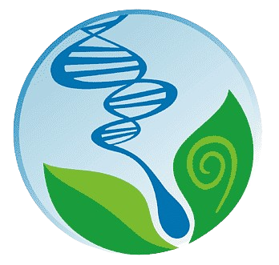

Matematika
Memperdalam pemahaman dan keterampilan di bidang matematika.
Kimia
Memungkinkan siswa/i untuk mendalami dan spesialisasi dalam area tertentu dalam ilmu kimia.
Fisika
Melatih kemampuan berpikir logis, analitis, dan sistematis.

Biologi
Memperdalam pengetahuan dan keterampilan mahasiswa dalam bidang tertentu dalam ilmu biologi. .
Tafsir Sains
Mengembangkan minat dan bakat dalam penelitian ilmiah.
Desain Grafis
Memahami Al-Qur'an dengan pendekatan ilmiah, khususnya pada ayat-ayat yang berkaitan dengan ilmu pengetahuan.